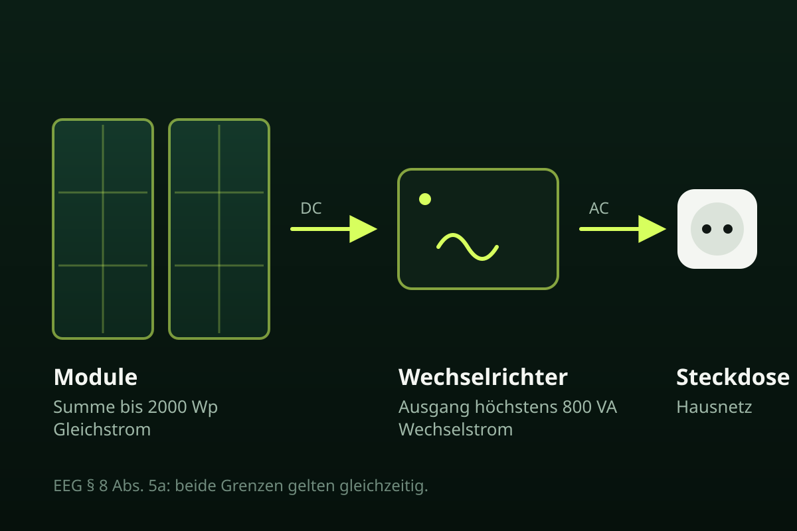
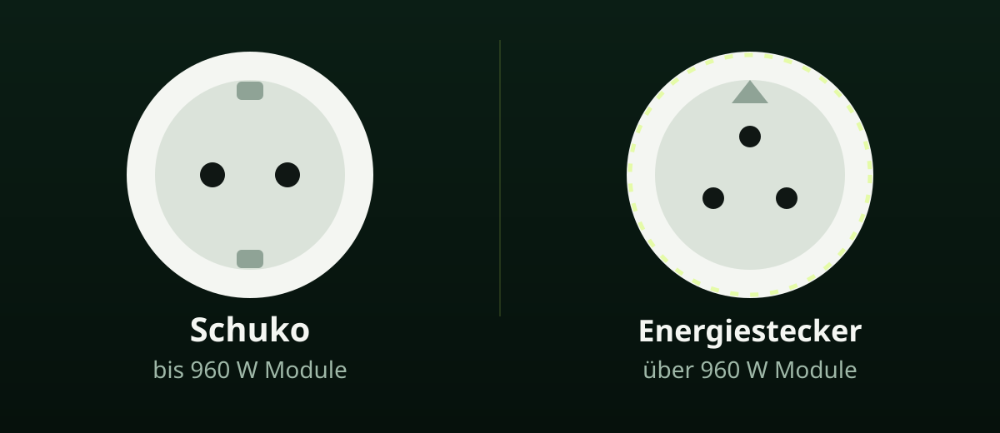

Sechs Prüfpunkte vor dem Kauf
Zuerst die beiden EEG-Grenzen, dann den Stecker, dann die Geräte hinter dem Zähler in der Wohnung. Bewertungssterne im Shop ersetzen diese Prüfung nicht.
-
Wechselrichter-Ausgang, höchste wählbare Leistung
Im Datenblatt die Ausgangsleistung in VA oder W suchen, nicht die Modul-Wp. Maßgeblich ist die höchste Stufe, die sich einstellen lässt, auch wenn eine App auf 600 VA drosselt. Für die vereinfachten EEG-Regeln darf sie höchstens 800 VA betragen. Quelle: EEG § 8 Abs. 5a, FAQ der Bundesnetzagentur.
-
Summe der Module in Watt Peak
Jedes Modul in Watt Peak addieren. Die Summe ist die installierte Leistung. Für die vereinfachten Regeln darf sie höchstens 2000 Wp bzw. 2 kW betragen. Mehr Wp als Wechselrichter-VA ist zulässig, weil der Wechselrichter abregelt.
-
Passender Stecker zur Modulleistung
Schuko ist laut Verbraucherzentrale (Stand 6. März 2026) bei DIN VDE V 0126-95, seit dem 1. Dezember 2025 für Geräte ohne Speicher, bis 960 W Modulleistung vorgesehen. Darüber ein spezieller Einspeisestecker. Förderprogramme können Wieland trotzdem verlangen. Das EEG setzt dafür keine eigene Steckergrenze.
-
Alles hinter demselben Zähler addieren
Zwei Geräte mit je 600 VA sind 1.200 VA. Dann greifen die Sonderregeln nicht. Dasselbe für die Modulsumme. Das Beispiel steht in den BNetzA-FAQ.
-
Miete oder Wohnungseigentum vor der Montage
§ 554 BGB: Der Mieter kann die Erlaubnis für Steckersolargeräte verlangen. Der Anspruch entfällt, wenn die Veränderung dem Vermieter unzumutbar ist. Die Verbraucherzentrale beschreibt dasselbe als Privilegierung seit Oktober 2024. Montage und Zustimmung vorher klären. Das ist keine Rechtsberatung.
-
Nach der Inbetriebnahme: Marktstammdatenregister
Registrierung unter marktstammdatenregister.de über den Weg „Steckerfertige Solaranlage“. Die Frist beträgt in der Regel einen Monat nach Inbetriebnahme, also nach dem ersten Wechselstrom ins Hausnetz. Die Registrierung ist gebührenfrei. Eine Extra-Meldung beim Netzbetreiber entfällt in den Leistungsgrenzen, wenn Sie auf Einspeisevergütung verzichten.
Warum 800 VA und 2000 Wp zusammen genannt werden
800 VA beschreiben den Wechselstrom, der ins Hausnetz darf. 2000 Wp beschreiben, wie groß der Generator sein darf. Wer die Zahlen vertauscht, erwartet 2000 W in der Steckdose oder fällt aus den vereinfachten Regeln. Die längere Erklärung steht im Artikel 800 W oder 2000 Wp.

800 VA
oft 800 W · Wechselrichter
Ausgangsleistung ins Hausnetz. Im Gesetzestext stehen Voltampere, im Handel meist Watt. Maßgeblich ist die höchste Stufe, die sich einstellen lässt.
2000 Wp
2 kW · Module
Installierte Leistung der Module, gemessen als Laborwert. Die Summe aller Module darf über 800 VA liegen. In die Steckdose speist sie trotzdem nicht 2000 W ein.
Schuko oder Wieland: Produktnorm und EEG
Die EEG-Sonderregeln erlauben Module bis 2 kW, unabhängig vom Stecker. Welche Steckvorrichtung zur Modulsumme passt, steht in der Produktnorm. Förderstellen können strenger sein als das Gesetz.

Norm
Schuko bis 960 W Module
Haushaltsstecker, wenn die Modulsumme höchstens 960 W beträgt und das Gerät der Produktnorm bzw. dem Sicherheitsstandard entspricht. Quelle: Verbraucherzentrale, 6. März 2026.
Norm
Energiesteckvorrichtung darüber
Über 960 W Modulleistung ein spezieller Einspeisestecker, häufig Wieland. Die Installation übernimmt oft eine Elektrofachkraft. Bis 2000 Wp bleibt das EEG-Sonderregime möglich, wenn der Wechselrichter bei höchstens 800 VA bleibt.
Was auf dem Datenblatt stehen muss
Angaben wie „800 W / 2000 Wp“ im Shop-Titel sind eine Behauptung. Im Datenblatt müssen Wechselrichterleistung und Modulsumme getrennt stehen. Fehlt eine der Angaben, lässt sich nicht prüfen, ob das Set in die vereinfachten Regeln fällt.
| Feld | Wonach Sie suchen | Grenze für den vereinfachten Weg |
|---|---|---|
| Wechselrichter AC | Ausgang, rated output, höchste wählbare VA/W | ≤ 800 VA |
| Module DC | Wp je Modul × Anzahl = installierte Leistung | ≤ 2000 Wp |
| Stecker | Schuko oder Energiesteckvorrichtung | Schuko laut Verbraucherzentrale bis 960 W |
| Normhinweis | DIN VDE V 0126-95 (Geräte ohne Speicher) | gilt seit 1. Dezember 2025 |
| Lieferumfang | Halterung, Kabel und Stecker, getrennt vom Werbefoto aufgelistet | muss zur Montage passen |
Was ein steckerfertiges Gerät ist
Die BNetzA definiert das Steckersolargerät in § 3 Nr. 43 EEG: Solaranlage oder Solaranlagen, Wechselrichter, Anschlussleitung und Stecker zum Endstromkreis eines Letztverbrauchers. Ein Modul allein ist das nicht.
Im Set
Ein bis vier Module, im Handel oft 400–500 Wp (ADAC 2026), ein Mikrowechselrichter, Anschlussleitung, Stecker, oft eine Halterung. Ohne Halterung ist das Gerät gesetzlich möglich, aber nicht montierbar.
Geräte mit Speicher
Die Produktnorm gilt laut Verbraucherzentrale für Geräte ohne Speicher. Einen Speicher muss ein Elektriker anmelden und anschließen. Das sollten Sie klären, bevor der Preis den Ausschlag gibt.
Was Sets 2026 kosten
Der ADAC veröffentlicht 2026 Preisspannen für den deutschen Markt. Das sind keine Preise dieser Seite und keine Empfehlung eines Shops.
Single-Set, etwa 400–500 W: ab 150 Euro. Standard-Set, etwa 800–1000 W ohne Speicher: 250–500 Euro. Komplett-Set mit Speicher: 700–1400 Euro. Maxi-Set 1800–2000 W mit Speicher: 1000–1700 Euro. Seit 2023 entfällt die 19-Prozent-Umsatzsteuer auf Module, Wechselrichter und Speicher für Privathaushalte. Örtliche Zuschüsse gibt es. Der ADAC nennt Spannen von 50–500 Euro und nennt Hamburg, Mecklenburg-Vorpommern und Sachsen sowie Kommunen. Zuschuss oft vor dem Kauf beantragen. Förderbedingungen können den Wieland-Stecker verlangen.
Wo Sie kaufen können
Ob Sie beim Hersteller, auf einem Marktplatz oder beim Elektriker bestellen: Die gesetzlichen Grenzen bleiben dieselben. Ein Angebot ist prüfbar, wenn Datenblatt, Lieferumfang und Impressum vollständig sind. Diese Seite erklärt die gesetzlichen Grenzen. Eine Produktrangliste steht hier nicht.
Direktshop des Herstellers
Oft vollständige Datenblätter und passendes Montagematerial.
Marktplatz
Viele Angebote, oft mit unvollständigen Titeln. Dieselben sechs Punkte gelten. Verkäufer und Importeur müssen identifizierbar sein.
Fachhandel / Elektro
Sinnvoll, wenn eine Energiesteckvorrichtung oder ein Speicher gesetzt werden muss. Laut Verbraucherzentrale muss ein zugelassener Elektriker den Speicher anmelden und anschließen.
Was jeder Shop liefern muss
Prüfen Sie, ob VA und Wp getrennt angegeben sind, welcher Stecker dabei ist, ob ein Speicher enthalten ist, welche Last die Halterung trägt, und wer im Impressum steht.
Zur Statik Ihres Geländers und zum Denkmalschutz sagt diese Seite nichts.
Häufige Fragen zum Kauf
Worauf muss ich beim Kauf eines Balkonkraftwerks 2026 achten?
Prüfen Sie drei Dinge: den Wechselrichter (höchstens 800 VA, und zwar die höchste Stufe, die sich wählen lässt), die Module (zusammen höchstens 2000 Wp) und den Stecker (laut Verbraucherzentrale Schuko bis 960 W Modulleistung, darüber eine Energiesteckvorrichtung). Was hinter demselben Zähler schon hängt, zählen Sie dazu. Nach dem ersten Stecken bleibt das MaStR Pflicht.
Reicht ein 800-W-Set mit genau 800 Wp Modulen?
Ja, wenn der Wechselrichter höchstens 800 VA kann. Mehr Modul-Wp als Wechselrichter-VA ist erlaubt und üblich. Der Wechselrichter regelt ab und speist nicht 2000 W in die Steckdose. Die EEG-Grenze für die Module bleibt 2 kW in der Summe.
Brauche ich für 2000 Wp einen Wieland-Stecker?
Die Steckerfrage steht in der Produktnorm. Das EEG setzt dafür keine eigene Grenze. Laut Verbraucherzentrale (Stand 6. März 2026) sieht DIN VDE V 0126-95 Schuko bis 960 W Modulleistung vor. Darüber einen speziellen Einspeisestecker. Die EEG-Sonderregeln erlauben Module bis 2 kW unabhängig vom Stecker. Eine Förderung kann Wieland trotzdem verlangen.
Kann ich ein Balkonkraftwerk mit Speicher vereinfacht anmelden?
Die Produktnorm DIN VDE V 0126-95 gilt laut Verbraucherzentrale seit dem 1. Dezember 2025 für Geräte ohne Speicher. Speicher muss ein zugelassener Elektriker beim Netzbetreiber anmelden und anschließen. Das ist der Stand der Verbraucherzentrale vom 6. März 2026, kein Testurteil.
Was kostet ein Balkonkraftwerk 2026?
Der ADAC nennt 2026 Orientierungsspannen: Single-Set etwa ab 150 Euro, Standard-Set 800–1000 W ohne Speicher 250–500 Euro, Komplett-Set mit Speicher 700–1400 Euro, Maxi-Set 1800–2000 W mit Speicher 1000–1700 Euro. Das sind Marktpreise zur Orientierung, keine Empfehlung eines Shops.
Warum steht hier keine Produktrangliste?
Diese Seite erklärt die gesetzlichen Grenzen. Eine Produktrangliste steht hier nicht.
Ist diese Seite Werbung?
steckercheck.de ist eine kommerzielle Informationsseite der AC Beauty to Customer UG (haftungsbeschränkt), Berlin. Partnerlinks sind mit dem Wort Werbung gekennzeichnet. Der Preis im Shop ändert sich dadurch nicht.
Quellen
- § 8 Abs. 5a EEG 2023 — 2 kW installierte Leistung, 800 VA Wechselrichter, MaStR bleibt, keine Extra-Meldung beim Netzbetreiber. https://www.gesetze-im-internet.de/eeg_2014/__8.html
- Bundesnetzagentur, FAQ Balkon-Solaranlagen — Definition Steckersolargerät, Grenzen, Zusammenrechnung, höchste wählbare Leistung. https://www.bundesnetzagentur.de/DE/Fachthemen/ElektrizitaetundGas/ErneuerbareEnergien/Solaranlagen/Balkon_table.html
- Marktstammdatenregister, FAQ und Fristen — Registrierung, Inbetriebnahme, ein Monat, gebührenfrei. https://www.marktstammdatenregister.de/MaStRHilfe/subpages/faq.html · Fristentabelle
- Verbraucherzentrale, Gesetze und Normen für Steckersolar (Stand 06.03.2026) — 800 W AC / 2.000 W Module; Schuko bis 960 W; Speicher nicht in der Produktnorm; Privilegierung Miete/WEG. https://www.verbraucherzentrale.de/wissen/energie/erneuerbare-energien/gesetze-und-normen-fuer-steckersolar-was-gilt-was-gilt-noch-nicht-90740
- ADAC, Balkonkraftwerk kaufen 2026 — Preisspannen, 0 % USt, örtliche Zuschüsse, Schuko/Wieland nach Modulleistung. https://www.adac.de/rund-ums-haus/energie/versorgung/balkonkraftwerk/
- § 554 BGB — Anspruch des Mieters auf Erlaubnis für Steckersolargeräte. https://www.gesetze-im-internet.de/bgb/__554.html